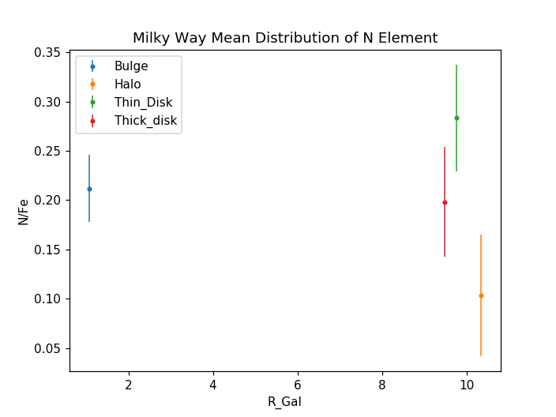

Visualization of C,N,O,Fe elements in Star Populations
Since the elements are produced in stars, here is a quick view of their distribution in different components of the Milky Way. The x-label refers to a radial distance, where close to zero is near the center of the Galaxy, and higher values refers to disk (which is a plane) and halo (being above the disk). The y-label are the mean values of each element per Galaxy region. Their distribution also help us to know the motion of stellar population and their influence in the evolution of supernovas and solar systems.
